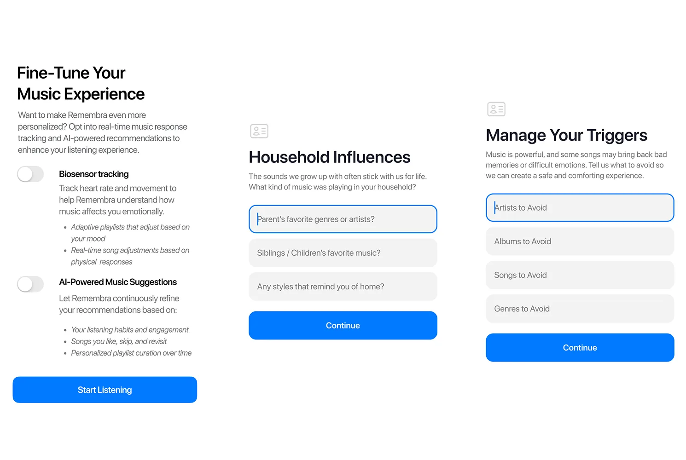
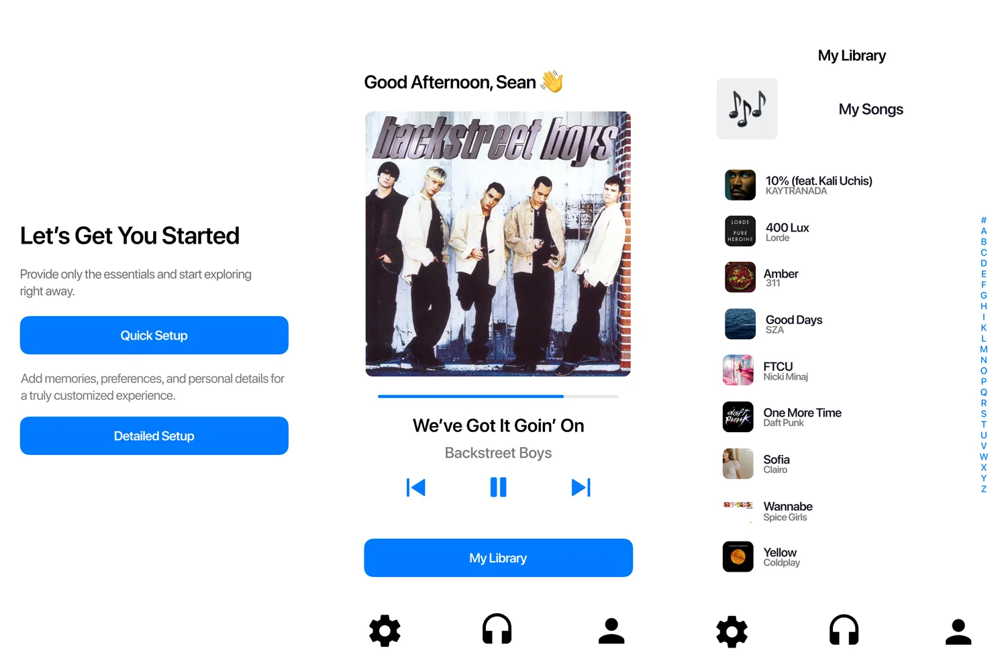
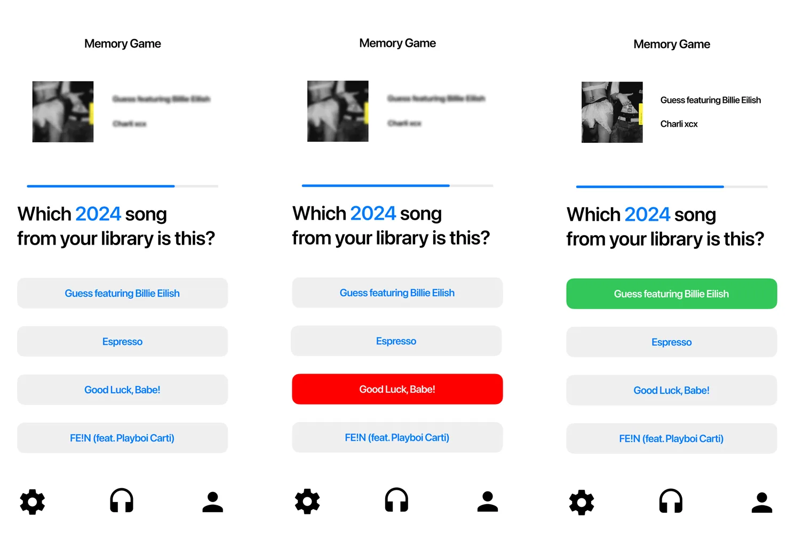
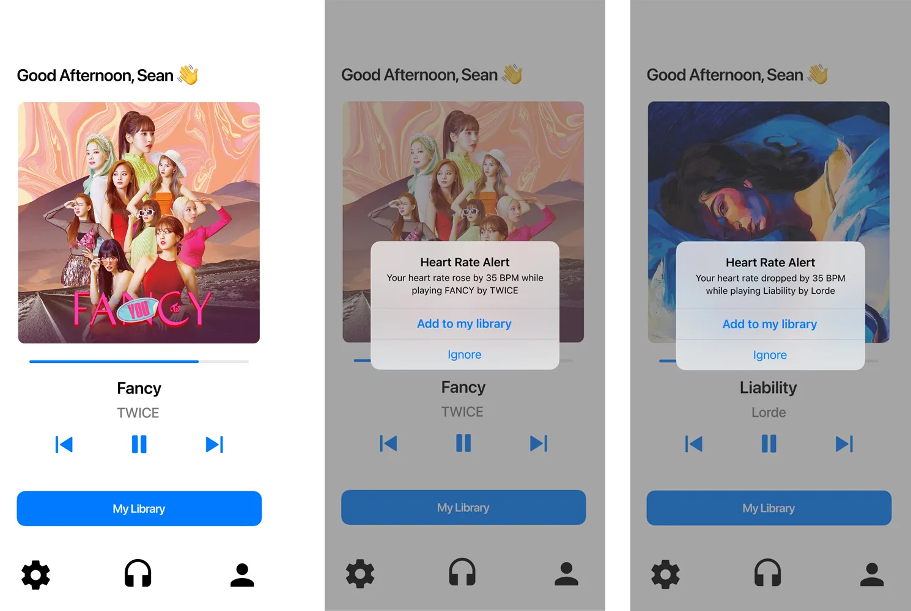

01 — Overview
Overview
Remembra is a music-based memory support app designed for individuals experiencing Alzheimer’s, dementia, and cognitive decline. The project explored how personalized music therapy, AI-driven recommendations, and wearable biosensor integration could create more emotionally engaging and supportive experiences for both patients and caregivers.
As UX Lead, I focused on shaping the user experience, interface direction, and overall product vision through research, wireframing, prototyping, and collaborative iteration with an interdisciplinary team of public health and informatics students.
02 — The problem
Memory loss is growing faster than care can keep up.
Over 55 million individuals globally experience memory loss from Alzheimer’s, dementia, and related cognitive disorders, a number expected to reach 139 million by 2050. With someone diagnosed every 3.2 seconds, traditional treatments fall short in addressing emotional and cognitive well-being.
Remembra combines the proven therapeutic benefits of music, clinically shown to delay cognitive decline and reduce depression, with AI and wearable biosensor technology. The app learns from your emotional responses and preferences, curating an experience that reconnects you to cherished memories, supports cognitive function, and uplifts your emotional health.
03 — Features
Features

Personalized AI
Music recommendations designed around your personal memories and preferences.

User friendly
Intuitive and simple, designed to be easily accessible by users of all ages.

Gamification
Test your memory and turn everyday music therapy into playful memory challenges.

Biosensors
Real-time heart rate and activity tracking provide live feedback, so each music session is continually refined for comfort and effectiveness.
04 — Research
Research
Clinical research shows that music therapy can meaningfully improve the lives of those experiencing cognitive decline. Studies like Chu et al. (2014) have demonstrated that personalized music programs can reduce anxiety, elevate mood, and even slow short-term memory deterioration.
Remembra builds on this foundation, combining the proven benefits of music therapy with AI and biometric feedback. By tracking heart rate and engagement in real time, Remembra adapts to each user’s unique responses, creating a dynamic, emotionally resonant experience that goes far beyond traditional therapy.
05 — Designing for real users
User friendly, and personal.
Remembra is designed with real-world users in mind, whether that’s a memory-impaired individual or a busy caregiver. The interface is intentionally simple, with large buttons, bold colors, and intuitive navigation tailored to older adults and those unfamiliar with technology. Caregivers can easily create playlists, monitor emotional responses through biosensor data, and tweak settings for optimal comfort. For more independent users, the app offers gamified memory recall challenges and AI-generated playlists fine-tuned to their preferences.
“Therapy shouldn’t feel like work. It should feel like listening to your favorite song.”
No two memories are alike, so why should music therapy be one-size-fits-all? Remembra’s AI learns from every interaction, adjusting recommendations based not just on musical preferences but also on real-time biosensor input like heart rate changes. From “Guess the Song” memory games to a music diary, Remembra engages the brain through play, routine, and nostalgia, and evolves with each user to keep therapy relevant and enjoyable.
06 — Prototype
Our high-fidelity prototype
Building on user feedback and iterative design, we refined Remembra into a fully interactive, visually cohesive high-fidelity model, from AI-powered recommendations to intuitive music controls.
07 — Presentation
Project presentation
08 — Team
Team
- Bryan Cardona
- Team Lead · Public Health Policy, School of Public Health
- Julia Chan
- Product Lead · Public Health Sciences, School of Population & Public Health
- Ethan Mandel
- UX Lead · Informatics, School of Information and Computer Sciences
- Diego Guzman
- CTO · Informatics, School of Information and Computer Sciences
09 — App development
App development
- TypeScript + JavaScript
- Type-checked foundation for smoother collaboration across the codebase
- Expo Go
- Cross-platform frontend development
- Firebase
- Real-time data storage, authentication, and serverless functions
- Python
- Data processing, AI music recommendations, and biosensor data pipelines
Together, these give Remembra a responsive, secure, and highly extensible foundation for a music therapy experience.